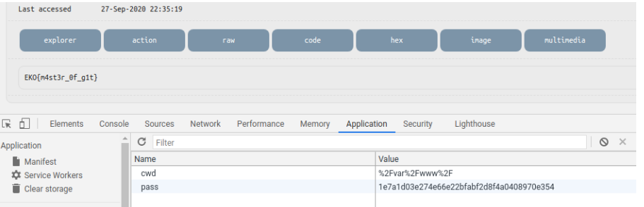

Challenge Data
- Name: Head
- Category: Git
- Points: 438/500
- Worked together with: @jaccinelli
- Description: A common mistake on websites deployments. My webshell
Solution
Once you entered to http://head.ctf.cap.tf:30000 you find a screen with a blank space which seems to be a password placeholder.
We used burp to understand what was going on. Only one variable, part of a POST, was being sent. We started playing with that parameter and due to we were dealing with PHP we tried to use an array:
The answer was interesting.

The underlaying PHP was calculating the MD5 of our param. Which sounded reasonable as we were dealing with a password. We continue trying to dig more about this service. By analyzing the description of the challenge again and also because it was in the git category, we decided to test accessing /.git dir. Unfortunately, a 404 HTTP error was retrieved. Then we tried with dirbuster but wasn't useful at all.
Finally, using also the name of the challenge, we decided to test /.git/HEAD:

Cool! The .git directory was being leaked! We started inspecting the different files of the directory manually, until we thougth that was better to download every file from it. We found this awesome tool called gitdumper. We executed it and after a couple of second, we had all the content inside our machines.
The first file that we found was the index.php. The first lines of it were:
<?php
/*
b374k shell 3.2.3
Jayalah Indonesiaku
(c)2020
https://github.com/b374k/b374k
*/
$GLOBALS['pass'] = file_get_contents('../secret'); // sha1(md5(pass))
[..]
It was defining the global parameter called pass with some fixed value from a file that wasn't readeable for us. After that line there were some strange lines.
By inspecting the comments (at the top of the file) and some previous commits, we realized that this index.php was hosting a Web Shell called b374k. It was encoded so it wasn't easy to read it.
We then inspected older commits and found that in the first version of this repo, the value of ../secret was hardcoded: However, this was the SHA1 of the MD5 of the real password. Nevertheless, we tried to use it as the password on the http://head.ctf.cap.tf:30000 screen, but it didn't work.
In this same commit we found the webshell (shell.php) totally decoded, so we could perform a more straightforward analysis of it. By doing this analysis and a careful eye of @jaccinelli, we finally found the function that was performing the authorization check:
if(!function_exists('auth')){
function auth(){
if(isset($GLOBALS['pass']) && (trim($GLOBALS['pass'])!='')){
$c = $_COOKIE;
$p = $_POST;
if(isset($p['pass'])){
$your_pass = sha1(md5($p['pass']));
if($your_pass==$GLOBALS['pass']){
setcookie("pass", $your_pass, time()+36000, "/");
header("Location: ".get_self());
}
}
if(!isset($c['pass']) || ((isset($c['pass'])&&($c['pass']!=$GLOBALS['pass'])))){
$res = "<!doctype html>
[..]
die();
Seems that there are two ways of authentication. If we could successfully meet one of those conditions we’d be able to log in. 1. Using the correct pass. We only had the sha1 of the md5 of the correct pass, so it was impossible to retrieve it from there. 2. The second one was comparing the value of a cookie called pass against the value of $GLOBALS['pass']. But the value of global pass, as we saw before, was the hash of the hash of final password (the value that we already had).
So it was enough to set a new cookie call pass with the value 134413ad5fa6b459b14ac999dc5f45f5f2647d19 and we successfully logged in. 